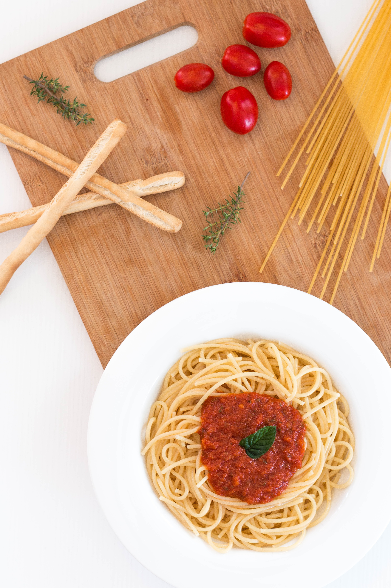

Spaghetti al pomodoro

Description
Would you like a quick light dish on a weeknight? Pasta Pomodoro, that's what you need! A simple but delicious Italian food that is a lifesaver when you want to cook something in a short time.
Pomodoro means tomato in Italian, basically it is pasta with tomato sauce, typically prepared with pasta, olive oil, fresh tomatoes, basil and various other fresh ingredients. see the recipe below.
Ingredients
- 1 lb. spaghetti
- 2 tbsp. extra-virgin olive oil
- 1 small yellow onion, chopped
- 3 cloves garlic, minced
- 4 medium tomatoes, chopped (about 4 c.)
- salt
- Freshly ground black pepper
- Pinch crushed red pepper flakes
- 2 tbsp. thinly sliced basil, plus more for garnish
- Freshly grated Parmesan, for garnish
Steps
- In a large pot of boiling salted water, cook pasta according to package directions. Reserve ½ cup of pasta water, then drain.
- In another large pot over medium heat, heat oil. Add onion and cook until soft, 5 minutes. Add garlic and cook until fragrant, 1 minute more.
- Add tomatoes and cook until juices are released. Season with salt, pepper, and a pinch red pepper flakes. Reduce heat and let simmer for 15 minutes. Stir in basil.
- Add spaghetti and ¼ cup pasta water. Toss to combine. Add more pasta water to bring sauce together as needed.
- Garnish with more basil and Parmesan before serving.
back to homepage